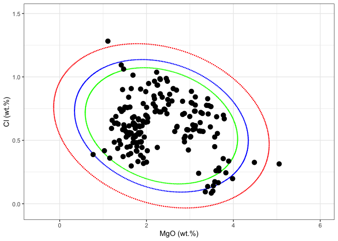
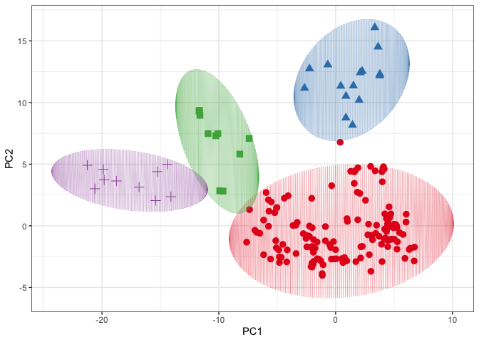
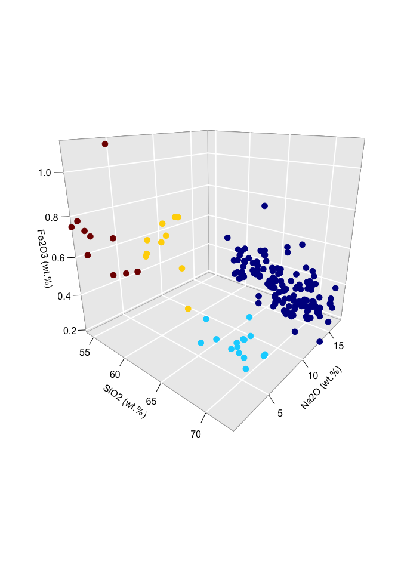

The objective of the ConfidenceEllipse package is to compute the confidence ellipse for a given bivariate normal data. The size of the ellipse is determined by the confidence level, and the shape is determined by the correlation structure between the variables. The confidence level is usually chosen to be 95% or 99%, and the resulting ellipse contains the points that are expected to lie within the multivariate distribution.
Installation
You can install the development version of ConfidenceEllipse like so:
# install.packages("remotes")
# remotes::install_github("ChristianGoueguel/ConfidenceEllipse")Example
Dataset
The dataset is comprised of 13 different measurements for 180 archaeological glass vessels from different groups (Janssen, K.H.A., De Raedt, I., Schalm, O., Veeckman, J.: Microchim. Acta 15 (suppl.) (1998) 253-267. Compositions of 15th - 17th century archaeological glass vessels excavated in Antwerp.)
df <-
cbind(glass.grp, glass) %>%
as_tibble() %>%
rename(glassType = glass.grp) %>%
modify_at("glassType", as_factor) %>%
print()
#> # A tibble: 180 × 14
#> glassType Na2O MgO Al2O3 SiO2 P2O5 SO3 Cl K2O CaO MnO Fe2O3
#> <fct> <dbl> <dbl> <dbl> <dbl> <dbl> <dbl> <dbl> <dbl> <dbl> <dbl> <dbl>
#> 1 1 13.9 2.24 1.31 67.8 0.884 0.052 0.936 3.04 8.78 0.674 0.364
#> 2 1 14.2 2.18 1.31 67.1 0.938 0.024 0.966 3.40 8.64 0.698 0.336
#> 3 1 14.7 3.03 1.36 63.3 0.988 0.064 0.886 2.83 11.1 1.24 0.4
#> 4 1 14.8 2.46 1.38 63.8 1.2 0.115 0.988 2.88 10.8 0.978 0.433
#> 5 1 14.1 2.48 1.07 68.8 0.682 0.07 0.966 2.40 8.81 0.31 0.242
#> 6 1 13.6 1.65 2.01 69.6 0.698 0.038 0.908 3.20 6.16 1.17 0.65
#> 7 1 12.9 2.69 1.42 64.0 0.966 0.046 0.896 2.53 13.0 0.874 0.516
#> 8 1 15.7 2.03 1.24 70.6 0.21 0.31 0.676 2.33 6.32 0.214 0.278
#> 9 1 13.9 2.26 1.07 68.3 0.75 0.037 0.935 2.32 9.44 0.605 0.25
#> 10 1 17.2 1.47 1.66 66.0 0.838 0.096 1.06 3.42 6.36 1.29 0.5
#> # ℹ 170 more rows
#> # ℹ 2 more variables: BaO <dbl>, PbO <dbl>Confidence Ellipse
First, the confidence_ellipse function is used to compute coordinate points of the confidence ellipse and then the ellipse is plotted on a two-dimensional plot x and y of the data. Points that lie outside the ellipse are considered to be outliers, while points that lie within the ellipse are considered to be part of the underlying distribution with the specified confidence level conf_level.
plot1 <- df %>%
ggplot() +
aes(x = MgO, y = Cl) +
geom_point(color = "black", size = 3L) +
xlim(-.5, 6) +
ylim(-0.05, 1.5) +
scale_color_brewer(palette = "Set1", direction = 1) +
labs(x = "MgO (wt.%)", y = "Cl (wt.%)") +
theme_bw() +
theme(legend.position = "none")
ellipse_99 <- confidence_ellipse(df, x = MgO, y = Cl, conf_level = 0.99) %>% print()
#> # A tibble: 361 × 2
#> x y
#> <dbl> <dbl>
#> 1 -0.138 0.770
#> 2 -0.138 0.759
#> 3 -0.138 0.748
#> 4 -0.137 0.737
#> 5 -0.135 0.726
#> 6 -0.132 0.715
#> 7 -0.129 0.704
#> 8 -0.124 0.693
#> 9 -0.119 0.681
#> 10 -0.114 0.670
#> # ℹ 351 more rows
ellipse_95 <- confidence_ellipse(df, x = MgO, y = Cl, conf_level = 0.95)
ellipse_90 <- confidence_ellipse(df, x = MgO, y = Cl, conf_level = 0.90)
plot2 <-
ggplot() +
geom_point(data = ellipse_99, aes(x = x, y = y), color = "red", size = .1) +
geom_point(data = ellipse_95, aes(x = x, y = y), color = "blue", size = .1) +
geom_point(data = ellipse_90, aes(x = x, y = y), color = "green", size = .1) +
geom_point(dat = df, aes(x = MgO, y = Cl), color = "black", size = 3L) +
xlim(-.5, 6) +
ylim(-0.05, 1.5) +
scale_color_brewer(palette = "Set1", direction = 1) +
labs(x = "MgO (wt.%)", y = "Cl (wt.%)") +
theme_bw() +
theme(legend.position = "none")
wrap_plots(plot1, plot2)
Grouping
For grouping bivariate data, the .group_by argument can be used if the data contains an unique grouping variable (.group_by = NULL by default). When a grouping variable is provided, the function will compute the ellipses separately for each level of the factor, allowing you to explore potential differences or patterns within subgroups of the data.
It’s important to note that the grouping variable should be appropriately coded as a factor before passing it to the .group_by argument. If the variable is currently stored as a character or numeric type, you may need to convert it to a factor using functions like as.factor() or forcats::as_factor().
ellipse_grp <- df %>% confidence_ellipse(MgO, Cl, glassType) %>% print()
#> # A tibble: 1,444 × 3
#> x y glassType
#> <dbl> <dbl> <fct>
#> 1 0.568 0.676 1
#> 2 0.568 0.669 1
#> 3 0.569 0.662 1
#> 4 0.570 0.655 1
#> 5 0.572 0.648 1
#> 6 0.574 0.641 1
#> 7 0.577 0.634 1
#> 8 0.580 0.627 1
#> 9 0.584 0.620 1
#> 10 0.589 0.613 1
#> # ℹ 1,434 more rows
plot3 <-
ggplot() +
geom_point(dat = df, aes(x = MgO, y = Cl, colour = glassType, shape = glassType), size = 3L) +
geom_line(data = ellipse_grp, aes(x = x, y = y, colour = glassType), linewidth = .1) +
xlim(0, 6) +
ylim(-0.05, 1.5) +
scale_color_brewer(palette = "Set1", direction = 1) +
labs(x = "MgO (wt.%)", y = "Cl (wt.%)") +
theme_bw() +
theme(legend.position = "none")
wrap_plots(plot1, plot3)
rpca_scores <- df %>%
select(where(is.numeric) )%>%
pcaPP::PCAproj(method = "qn") %>%
pluck("scores") %>%
as_tibble() %>%
mutate(glassType = df %>% pull(glassType)) %>%
rename(PC1 = Comp.1, PC2 = Comp.2)
ellipse_pca <- rpca_scores %>%
confidence_ellipse(PC1, PC2, glassType)
plot4 <-
ggplot() +
geom_point(data = rpca_scores, aes(x = PC1, y = PC2, colour = glassType, shape = glassType), size = 3L) +
geom_line(data = ellipse_pca, aes(x = x, y = y, colour = glassType), linewidth = .1) +
scale_color_brewer(palette = "Set1", direction = 1) +
labs(x = "PC1", y = "PC2") +
theme_bw() +
theme(legend.position = "none")
plot4
Confidence Ellipsoid
The confidence_ellipsoid function accepts an additional variable z and computes the ellipsoid for trivariate data.
ellipsoid_grp <- df %>%
confidence_ellipsoid(SiO2, Na2O, Fe2O3, glassType) %>%
print()
#> # A tibble: 10,000 × 4
#> x y z glassType
#> <dbl> <dbl> <dbl> <fct>
#> 1 67.3 14.5 0.597 1
#> 2 67.3 14.5 0.597 1
#> 3 67.3 14.5 0.597 1
#> 4 67.3 14.5 0.597 1
#> 5 67.3 14.5 0.597 1
#> 6 67.3 14.5 0.597 1
#> 7 67.3 14.5 0.597 1
#> 8 67.3 14.5 0.597 1
#> 9 67.3 14.5 0.597 1
#> 10 67.3 14.5 0.597 1
#> # ℹ 9,990 more rows
plot5 <-
plot3D::scatter3D(
x = df$SiO2,
y = df$Na2O,
z = df$Fe2O3,
colvar = as.integer(df$glassType),
colkey = FALSE,
phi = 20,
bty = "g",
pch = 20,
cex = 2,
xlab = "SiO2 (wt.%)", ylab = "Na2O (wt.%)", zlab = "Fe2O3 (wt.%)",
ticktype = "detailed")